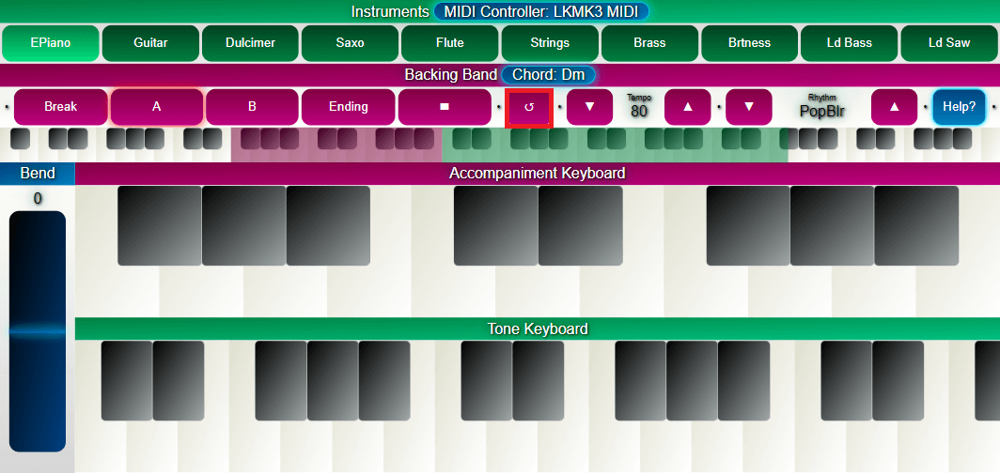

| Thanks Overview Play an Instrument Playing with Backing Band Chord MIDI Controller Troubleshooting Specifications About |
Thank you very much!Sincerely thank you for downloading and using Music Arranger Keyboard app of Telerzine!We hope you will have a lot of fun with this app. To make use of this app effectively, please read this manual carefully.
What is this app?Music Arranger Keyboard is a music keyboard app with the support of accompaniment from a virtual band. In other words, you have a whole band in your pocket and can play together with this virtual band anytime, anywhere.
To play an InstrumentFirst choose the type of instrument you want to play by tapping one of the buttons in the Instruments section. Then press some keys in the Tone Keyboard section to emit the sound of that instrument.How to play extremely low or extremely high notes?Because of the very limited size of the phone screen, we cannot display all the keys (a total of 88 keys). You can drag the green rectangle as below to display the remaining keys.Using BendAt the same time, you can use Bend on the left side to bend the pitch of the notes.Slide your finger up or down in this section to bend the note high or low. The Bend's range is 2 semitones.
Playing with Backing BandThe virtual band is the strength of this app. As shown below, first select the type of rhythm you want, then adjust the tempo of the rhythm.There are 2 ways for the virtual band to start playing.
Control the FlowThe four buttons above are used as follows:
The Reset button is used for Tutti or used to reset to the first beat of the bar. 
ChordTo make the bass player play the bass line you want, you must specify a chord by pressing at least 3 keys in Accompaniment Keyboard section.If you want only the drum player, remove the chord by tapping the area as illustrated below, so its text changes to "No Chord Detected".
Play with Midi ControllerMusic Arranger Keyboard has the ability to connect to external hardware, namely midi controllers. You can play notes through these outer keyboards. Not only that, you can change to another instrument and control the flow from your controller. Once connected, your Controller name will be displayed on the top of the app screen. Tap on your MIDI Controller's name to open the Mapping screen. In the illustration above, the left column is the functions that your controller can control, the right column is the "Control Change (CC)" numbers. To change this CC number, click the corresponding button in the right column, then press a Control on your Hardware.
TroubleshootingWhy does the sound emit jerking and not smooth?→ Music Arranger Keyboard is an app that requires a lot of hardware resources. The app may be a bit lag when it is started, but it will be smoother after that. If this situation continues, you can try to turn off other apps, update the system, or even try to restart the device.Abnormal/Unstable Tempo.→ Abnormal Tempo can occur when the app has just started, but then will stabilize. If this lasts, you can try to exit other apps, updating the system, or even trying to restart your device.Why is the sound delayed?→ For the best sound quality, please use wired connections. The use of Bluetooth connectivity can make the sound delay.I have connected my MIDI Controller to the app. Why does the app not show its name but show "No Midi Controller Detected"?→ You can try to restart the app. If the app still does not recognize your Midi Controller, it may be the app and your hardware that is not compatible with each other.The app screen is all white.→ You can try to restart the app. If this error still exists, please try updating the software on your device and then try again.The app is constantly stopped.→ Please update the software on your device to the latest version. Or you can try deleting the data of this app and then try again.
Specifications
About© 2024 THT. All rights reserved. |